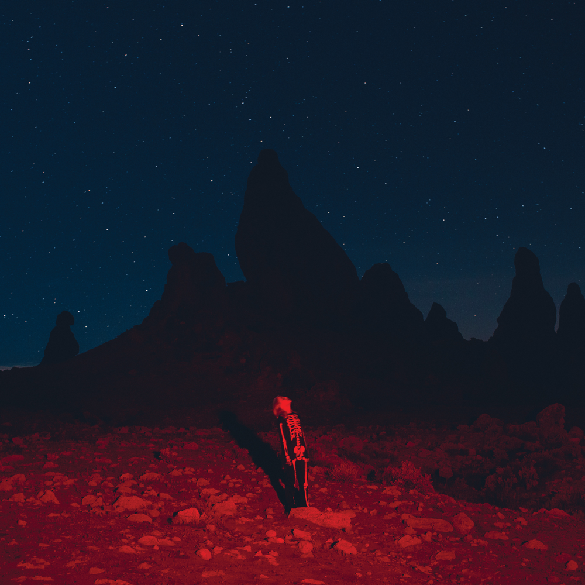
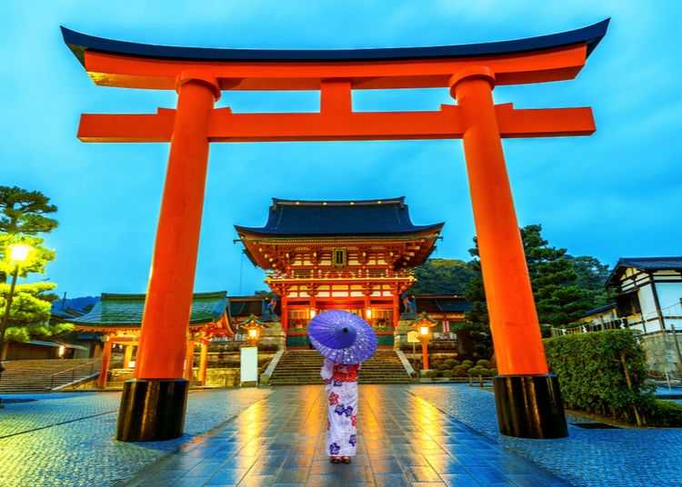
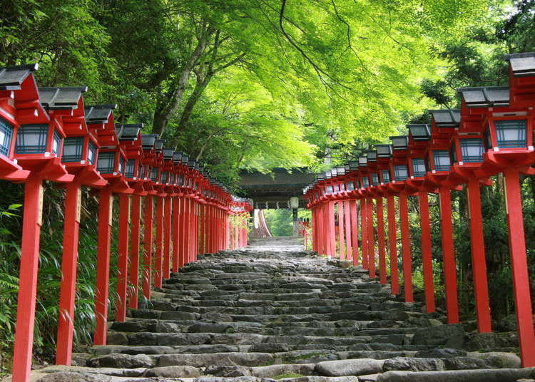
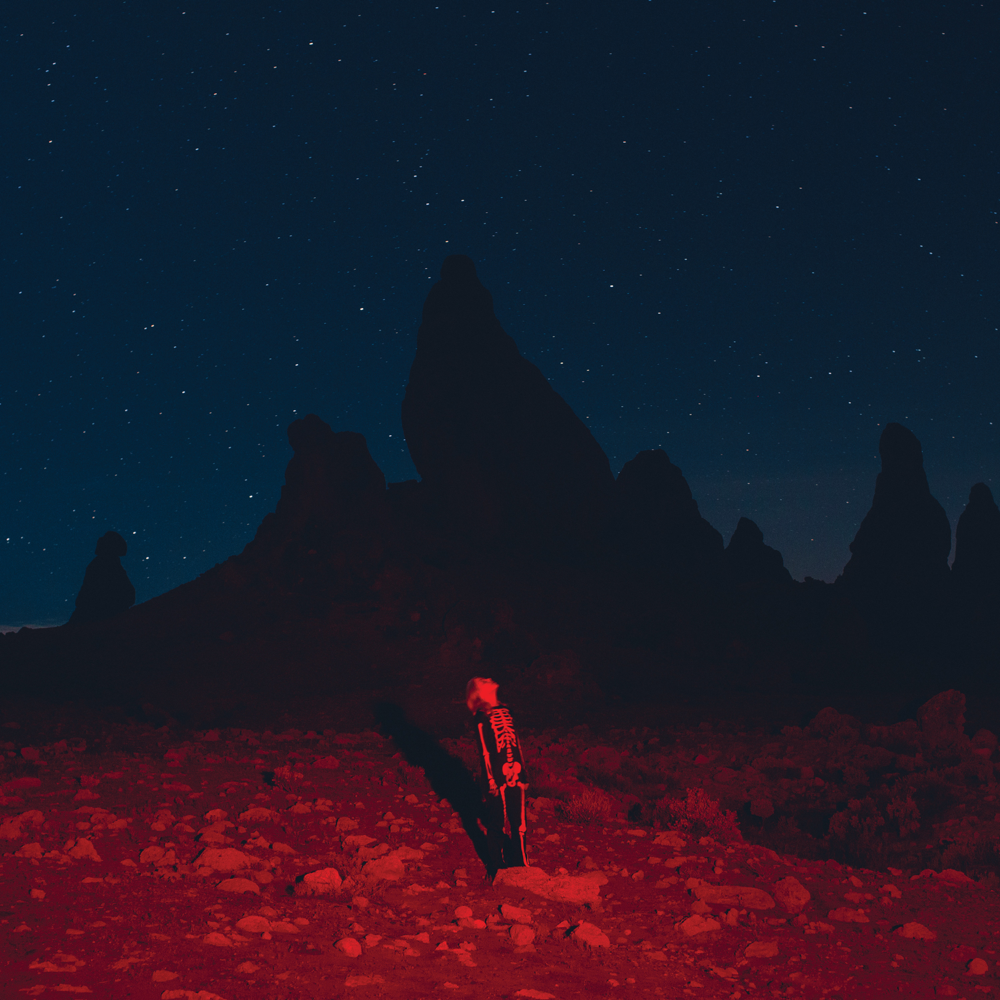
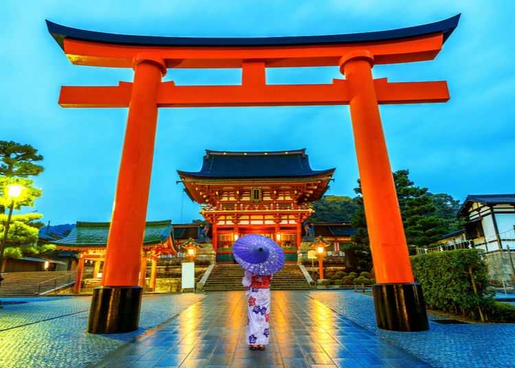
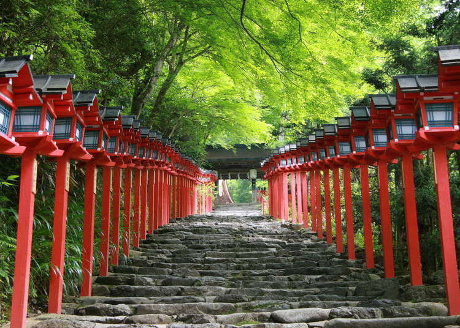

Asia is known worldwide for having the greatest diversity in culture! It is home to almost three-fifths of the world's population. Crazy right?!?! No wonder why I was put up for adoption. Just kidding, it was because of the one child policy.
Asia is the birthplace to many of the world's major religions, which include, Buddhism, Christianity, Hinduism, Islam, and Judaism.
All the Best Places in Asia, on one website!
Asia is filled with diverse cultures and new exciting things all around you!
Interesting facts about Asia
- - Singapore has a building inspired by a Star Wars robot.
- - There are over 1,600 temples in Kyoto, Japan.
- - China produces 45 billion pairs of chopsticks each year.
- - South Korea has a separate Valentine's Day for single people.
Kyoto, Japan
Kyoto, Japan's former capital, is a city on the Honshu island(west-central of the island). Kyoto served as Japan's capital for nearly 1,000 years. In 1868, Tokyo took up the title. Kyoto is both considered Japan's cultural capital and a popular tourist destination. It is home to a wealth of Buddhist temples, Shinto shrines, palaces, and gardens, some of which have been designated as UNESCO World Heritage Sites. Kyoto is frequently referred to as the most beautiful city in Japan. Many visitors come to see the city's famed architectural treasures, search for elusive geishas (female Japanese performing artists and entertainers), and, of course, see the cherry blossoms in the spring.
Travel Images from Kyoto

 





Here are some of the countless places you can go and visit in Kyoto, Japan. No matter where you decide to visit in Asia, you will come back more diverse in culture and historical traditions and architecture, than ever before!
Bonus: In the middle photo I added a photo of a singer named Phoebe Bridgers who wrote a song about Kyoto, Japan.
Song: Kyoto / Album: Punisher / Singer: Phoebe Bridgers / Genre: Alternative/Indie Rock
Importance of Cherry Blossoms in Japan
Cherry blossoms are a symbolic spring flower that represents renewal, as well as the passing essence of life. The blossoms begin to fall after two weeks, when their beauty peaks.Many people in Japan assume that there is only one type of cherry blossom, however there are really over 20 different subspecies!
| Species | Colour | Number of Petals | Images |
|---|---|---|---|
| Somei Yoshino (Yoshino Cherry) | Slightly pink, almost white | 5 petals per blossom | |
| Ukon | Yellowish color, can be tinted in different colours | 10-20 petals per blossom | |
| Prunus 'Kanzan' | Pink | 30-50 petals per blossom |
Did you know that people in Japan even enjoy having cherry blossom parties with coworkers, friends, and family during this season (spring).
Sakura is the Japanese word for cherry blossoms. There is even an anime character named Sakura, after the cherry blossoms that bloom in spring. Her hair is also the same colour as when sakura (cherry blossoms) bloom.
More places you can travel to in Asia
- Maldives It's the epitome of luxury and tranquillity. The Maldives are renowned for its pristine waters with gorgeous blue hues, palm trees, and shimmering white sand beneath the endless blue skies. It has a flourishing culture and a multitude of enchanting landmarks. star
- Hong Kong Hong Kong is widely recognised for being a shopping paradise. Visitors can also take in panoramic views of the city from high altitude points, enjoy the culture of local cuisine, participate in festivals and so much more! star
- Shanghai Shanghai is China's most populous and wealthiest city. With a population of almost 20 million people. It provides visitors with a variety of excellent sightseeing options. Despite its busy nature, it also has an abundance of peaceful historical tourist sites. star